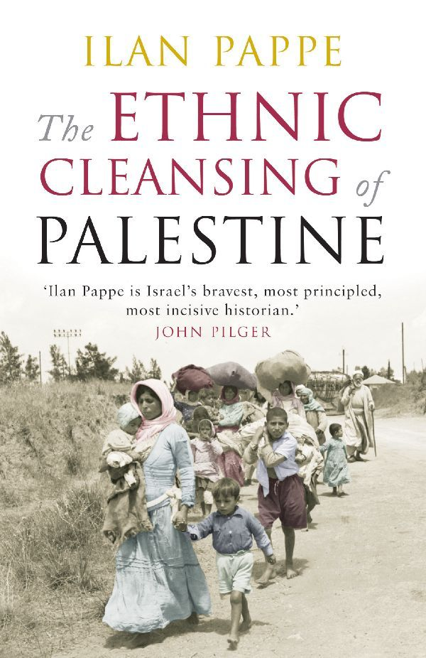

The Ethnic Cleansing of Palestine (2006)
Preface: The Red House

We are not mourning the farewell
We do not have the time nor the tears
We do not grasp the moment of farewell
Why, it is the Farewell
And we are left with the tears
Taha Muhammad Ali (1988), a refugee from the village of Saffuriyya
“I am for compulsory transfer; I do not see anything immoral in it.”
David Ben-Gurion to the Jewish Agency Executive, June 1938
The ‘Red House’ was a typical early Tel-Avivian building. The pride of the Jewish builders and craftsmen who toiled over it in the 1920s, it had been designed to house the head office of the local workers’ council. It remained such until, towards the end of 1947, it became the headquarters of the Hagana, the main Zionist underground militia in Palestine. Located near the sea on Yarkon Street in the northern part of Tel-Aviv, the building formed another fine addition to the first ‘Hebrew’ city on the Mediterranean, the ‘White City’ as its literati and pundits affectionately called it. For in those days, unlike today, the immaculate whiteness of its houses still bathed the town as a whole in the opulent brightness so typical of Mediterranean port cities of the era and the region. It was a sight for sore eyes, elegantly fusing Bauhaus motifs with native Palestinian architecture in an admixture that was called Levantine, in the least derogatory sense of the term. Such, too, was the ‘Red House’, its simple rectangular features graced with frontal arches that framed the entrance and supported the balconies on its two upper storeys. It was either its association with a workers’ movement that had inspired the adjective ‘red’, or a pinkish tinge it acquired during sunset that had given the house its name.2 The former was more fitting, as the building continued to be associated with the Zionist version of socialism when, in the 1970s, it became the main office for Israel’s kibbutzim movement. Houses like this, important historical remnants of the Mandatory period, prompted UNESCO in 2003 to designate Tel-Aviv as a World Heritage site.
Today the house is no longer there, a victim of development, which has razed this architectural relic to the ground to make room for a car park next to the new Sheraton Hotel. Thus, in this street, too, no trace is left of the ‘White City’, which it has slowly transmogrified into the sprawling, polluted, extravagant metropolis that is modern Tel-Aviv.
In this building, on a cold Wednesday afternoon, 10 March 1948, a group of eleven men, veteran Zionist leaders together with young military Jewish officers, put the final touches to a plan for the ethnic cleansing of Palestine. That same evening, military orders were dispatched to the units on the ground to prepare for the systematic expulsion of the Palestinians from vast areas of the country.3 The orders came with a detailed description of the methods to be employed to forcibly evict the people: large-scale intimidation; laying siege to and bombarding villages and population centres; setting fire to homes, properties and goods; expulsion; demolition; and, finally, planting mines among the rubble to prevent any of the expelled inhabitants from returning. Each unit was issued with its own list of villages and neighbourhoods as the targets of this master plan. Codenamed Plan D (Dalet in Hebrew), this was the fourth and final version of less substantial plans that outlined the fate the Zionists had in store for Palestine and consequently for its native population. The previous three schemes had articulated only obscurely how the Zionist leadership contemplated dealing with the presence of so many Palestinians living in the land the Jewish national movement coveted as its own. This fourth and last blueprint spelled it out clearly and unambiguously: the Palestinians had to go.4 In the words of one of the first historians to note the significance of that plan, Simcha Flapan, ‘The military campaign against the Arabs, including the “conquest and destruction of the rural areas” was set forth in the Hagana’s Plan Dalet’.5 The aim of the plan was in fact the destruction of both the rural and urban areas of Palestine.
As the first chapters of this book will attempt to show, this plan was both the inevitable product of the Zionist ideological impulse to have an exclusively Jewish presence in Palestine, and a response to developments on the ground once the British cabinet had decided to end the mandate. Clashes with local Palestinian militias provided the perfect context and pretext for implementing the ideological vision of an ethnically cleansed Palestine. The Zionist policy was first based on retaliation against Palestinian attacks in February 1947, and it transformed into an initiative to ethnically cleanse the country as a whole in March 1948.6
Once the decision was taken, it took six months to complete the mission. When it was over, more than half of Palestine’s native population, close to 800,000 people, had been uprooted, 531 villages had been destroyed, and eleven urban neighbourhoods emptied of their inhabitants. The plan decided upon on 10 March 1948, and above all its systematic implementation in the following months, was a clear-cut case of an ethnic cleansing operation, regarded under international law today as a crime against humanity.
After the Holocaust, it has become almost impossible to conceal large-scale crimes against humanity. Our modern communication-driven world, especially since the upsurge of electronic media, no longer allows human-made catastrophes to remain hidden from the public eye or to be denied. And yet, one such crime has been erased almost totally from the global public memory: the dispossession of the Palestinians in 1948 by Israel. This, the most formative event in the modern history of the land of Palestine, has ever since been systematically denied, and is still today not recognised as an historical fact, let alone acknowledged as a crime that needs to be confronted politically as well as morally.
Ethnic cleansing is a crime against humanity, and the people who perpetrate it today are considered criminals to be brought before special tribunals. It may be difficult to decide how one ought to refer to or deal with, in the legal sphere, those who initiated and perpetrated ethnic cleansing in Palestine in 1948, but it is possible to reconstruct their crimes and to arrive at both an historiographical account that will prove more accurate than the ones achieved so far, and a moral position of greater integrity.
We know the names of the people who sat in that room on the top floor of the Red House, beneath Marxist-style posters that carried such slogans as ‘Brothers in Arms’ and ‘The Fist of Steel’, and showed ‘new’ Jews – muscular, healthy and tanned – aiming their rifles from behind protective barriers in the ‘brave fight’ against ‘hostile Arab invaders’. We also know the names of the senior officers who executed the orders on the ground. All are familiar figures in the pantheon of Israeli heroism.7 Not so long ago many of them were still alive, playing major roles in Israeli politics and society; very few are still with us today.
For Palestinians, and anyone else who refused to buy into the Zionist narrative, it was clear long before this book was written that these people were perpetrators of crimes, but that they had successfully evaded justice and would probably never be brought to trial for what they had done. Besides their trauma, the deepest form of frustration for Palestinians has been that the criminal act these men were responsible for has been so thoroughly denied, and that Palestinian suffering has been so totally ignored, ever since 1948.
Approximately thirty years ago, the victims of the ethnic cleansing started reassembling the historical picture that the official Israeli narrative of 1948 had done everything to conceal and distort. The tale Israeli historiography had concocted spoke of a massive ‘voluntary transfer’ of hundreds of thousands of Palestinians who had decided temporarily to leave their homes and villages so as to make way for the invading Arab armies bent on destroying the fledgling Jewish state. By collecting authentic memories and documents about what had happened to their people, Palestinian historians in the 1970s, Walid Khalidi foremost among them, were able to retrieve a significant part of the picture Israel had tried to erase. But they were quickly overshadowed by publications such as Dan Kurzman’s Genesis 1948 which appeared in 1970 and again in 1992 (now with an introduction by one of the executors of the ethnic cleansing of Palestine, Yitzhak Rabin, then Israel’s prime minister). However, there were also some who came out in support of the Palestinian endeavour, like Michael Palumbo whose The Palestinian Catastrophe, published in 1987, validated the Palestinian version of the 1948 events with the help of UN documents and interviews with Palestinian refugees and exiles, whose memories of what they had gone through during the Nakba still proved to be hauntingly vivid.8
We could have had a political breakthrough in the battle over memory in Palestine with the appearance on the scene in the 1980s of the so-called ‘new history’ in Israel. This was an attempt by a small group of Israeli historians to revise the Zionist narrative of the 1948 war.9 I was one of them. But we, the new historians, never contributed significantly to the struggle against the Nakba denial as we sidestepped the question of ethnic cleansing and, typically of diplomatic historians, focused on details. Nonetheless, using primarily Israeli military archives, the revisionist Israeli historians did succeed in showing how false and absurd was the Israeli claim that the Palestinians had left ‘of their own accord’. They were able to confirm many cases of massive expulsions from villages and towns and revealed that the Jewish forces had committed a considerable number of atrocities, including massacres.
One of the best-known figures writing on the subject was the Israeli historian Benny Morris.10 As he exclusively relied on documents from Israeli military archives, Morris ended up with a very partial picture of what happened on the ground. Still, this was enough for some of his Israeli readers to realise that the ‘voluntary flight’ of the Palestinians had been a myth and that the Israeli self-image of having waged a ‘moral’ war in 1948 against a ‘primitive’ and hostile Arab world was considerably flawed and possibly already bankrupt.
The picture was partial because Morris took the Israeli military reports he found in the archives at face value or even as absolute truth. Thus, he ignored such atrocities as the poisoning of the water supply into Acre with typhoid, numerous cases of rape and the dozens of massacres the Jews perpetrated. He also kept insisting – wrongly – that before 15 May 1948 there had been no forced evictions.11 Palestinian sources show clearly how months before the entry of Arab forces into Palestine, and while the British were still responsible for law and order in the country – namely before 15 May – the Jewish forces had already succeeded in forcibly expelling almost a quarter of a million Palestinians.12 Had Morris and others used Arab sources or turned to oral history, they might have been able to get a better grasp of the systematic planning behind the expulsion of the Palestinians in 1948 and provide a more truthful description of the enormity of the crimes the Israeli soldiers committed.
There was then, and there is still now, a need, both historical and political, to go beyond descriptions such as the one we find in Morris, not only in order to complete the picture (in fact, provide the second half of it), but also – and far more importantly – because there is no other way for us to fully understand the roots of the contemporary Israeli-Palestinian conflict. But above all, of course, there is a moral imperative to continue the struggle against the denial of the crime. The endeavour to go further has already been started by others. The most important work, to be expected given his previous significant contributions to the struggle against denial, was Walid Khalidi’s seminal book All That Remains. This is an almanac of the destroyed villages, which is still an essential guide for anyone wishing to comprehend the enormity of the 1948 catastrophe.13
One might suggest that the history already exposed should have been enough to raise troubling questions. Yet, the ‘new history’ narrative and recent Palestinian historiographical inputs somehow failed to enter the public realm of moral conscience and action. In this book, I want to explore both the mechanism of the 1948 ethnic cleansing, and the cognitive system that allowed the world to forget, and enabled the perpetrators to deny, the crime the Zionist movement committed against the Palestinian people in 1948.
In other words, I want to make the case for the paradigm of ethnic cleansing and use it to replace the paradigm of war as the basis for the scholarly research of, and the public debate about, 1948. I have no doubt that the absence so far of the paradigm of ethnic cleansing is part of the reason why the denial of the catastrophe has been able to go on for so long. When it created its nation-state, the Zionist movement did not wage a war that ‘tragically but inevitably’ led to the expulsion of ‘parts of’ the indigenous population, but the other way round: the main goal was the ethnic cleansing of all of Palestine, which the movement coveted for its new state. A few weeks after the ethnic cleansing operations began, the neighbouring Arab states sent a small army – small in comparison to their overall military might – to try, in vain, to prevent the ethnic cleansing. The war with the regular Arab armies did not bring the ethnic cleansing operations to a halt until their successful completion in the autumn of 1948.
To some, this approach – adopting the paradigm of ethnic cleansing as the a priori basis for the narrative of 1948 – may from the outset look as an indictment. In many ways it is indeed my own J’Accuse against the politicians who devised, and the generals who perpetrated, the ethnic cleansing. Still, when I mention their names, I do so not because I want to see them posthumously brought to trial, but in order to humanise the victimisers as well as the victims: I want to prevent the crimes Israel committed from being attributed to such elusive factors as ‘the circumstances’, ‘the army’ or, as Morris has it, ‘à la guerre comme à la guerre’, and similar vague references that let sovereign states off the hook and enable individuals to escape justice. I accuse, but I am also part of the society that stands condemned in this book. I feel both responsible for and part of the story and, like others in my own society, I am convinced, as my final pages show, that such a painful journey into the past is the only way forward if we want to create a better future for us all, Palestinians and Israelis alike. Because, at heart, that is what this book is about.
I am not aware that anyone has ever tried this approach before. The two official historical narratives that compete over the story of what happened in Palestine in 1948 both ignore the concept of ethnic cleansing. While the Zionist/Israeli version claims that the local population left ‘voluntarily’, the Palestinians talk about the ‘catastrophe’, the Nakba, that befell them, which in some ways is also an elusive term as it refers more to the disaster itself rather than to who or what caused it. The term Nakba was adopted, for understandable reasons, as an attempt to counter the moral weight of the Jewish Holocaust (Shoa), but in leaving out the actor, it may in a sense have contributed to the continuing denial by the world of the ethnic cleansing of Palestine in 1948 and after.
The book opens with a definition of ethnic cleansing that I hope is transparent enough to be acceptable to all, one that has served as the basis for legal actions against perpetrators of such crimes in the past and in our own days. Quite surprisingly, the usual complex and (for most normal human beings) impenetrable legal discourse is here replaced by clear, jargon-free language. This simplicity does not minimise the hideousness of the deed nor does it belie the crime’s gravity. On the contrary: the result is a straightforward description of an atrocious policy that the international community today refuses to condone.
The general definition of what ethnic cleansing consists of applies almost verbatim to the case of Palestine. As such, the story of what occurred in 1948 emerges as an uncomplicated, but by no means a consequently simplified, or secondary, chapter in the history of Palestine’s dispossession. Indeed, adopting the prism of ethnic cleansing easily enables one to penetrate the cloak of complexity that Israeli diplomats trot out almost instinctively and Israeli academics routinely hide behind when fending off outside attempts to criticise Zionism or the Jewish state for its policies and behaviour. ‘Foreigners’, they say in my country, ‘do not and cannot understand this perplexing story’ and there is therefore no need even to try to explain it to them. Nor should we allow them to be involved in the attempts to solve the conflict – unless they accept the Israeli point of view. All one can do, as Israeli governments have been good at telling the world for years, is to allow ‘us’, the Israelis, as representatives of the ‘civilised’ and ‘rational’ side in the conflict, to find an equitable solution for ‘ourselves’ and for the other side, the Palestinians, who after all epitomise the ‘uncivilised’ and ‘emotional’ Arab world to which Palestine belongs. The moment the United States proved ready to adopt this warped approach and endorse the arrogance that underpins it, we had a ‘peace process’ that has led, and could only lead, nowhere, because it so totally ignores the heart of the matter.
But the story of 1948, of course, is not complicated at all, and therefore this book is written as much for newcomers to the field as it is aimed at those who already, for many years and various reasons, have been involved with the question of Palestine and how to bring us closer to a solution. It is the simple but horrific story of the ethnic cleansing of Palestine, a crime against humanity that Israel has wanted to deny and cause the world to forget. Retrieving it from oblivion is incumbent upon us, not just as a greatly overdue act of historiographical reconstruction or professional duty; it is, as I see it, a moral decision, the very first step we must take if we ever want reconciliation to have a chance, and peace to take root, in the torn lands of Palestine and Israel.